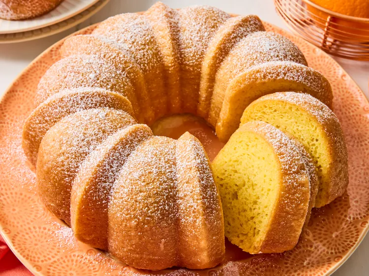

Orange Cake

Description
This orange juice cake recipe is similar to a rum cake, but you substitute orange juice for rum.
Ingredients
- 1 (15.25 ounce) package yellow cake mix
- 1 (3.4 ounce) package instant vanilla pudding mix
- 1 cup cold water
- ½ cup vegetable oil
- 4 large eggs
- ¾ cup orange juice
- ¾ cup white sugar
- ½ cup butter
- confectioners sugar for dusting (optional)
steps
- Preheat the oven to 350 degrees F (175 degrees C). Grease a large Bundt pan.
- Combine cake mix, pudding mix, water, oil, and eggs together in a large bowl. Mix with an electric mixer on medium speed until combined, about 2 minutes. Pour batter into Bundt pan.
- Bake in the preheated oven until a toothpick inserted into cake comes out clean, about 30 minutes.
- Combine juice, sugar, and butter in a medium saucepan. Bring to a boil for about 2 minutes; cool slightly.
- Poke holes all over the top of the warm cake with a fork or skewer. Pour the warm orange glaze evenly over the cake while still in the pan. Cool for 10 minutes.
- Invert the cake onto a serving plate. Dust with confectioners≈ sugar, if desired, before serving.
Back to Home